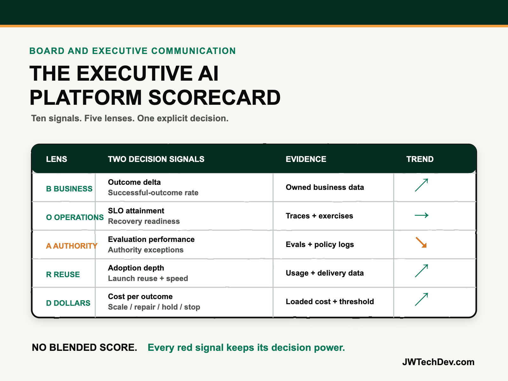

The executive AI platform scorecard.
Executives do not need fifty agent metrics or one suspiciously green composite score. They need a short, traceable view of whether the platform is creating business value, operating reliably, staying inside its authority, increasing organizational leverage, and earning the next investment decision.

Quick answer
Give the executive team one page with five lenses and ten signals. I call it the BOARD Scorecard: Business result, Operational health, Authority and assurance, Reuse and reach, and Dollars and decision.
Every signal needs a named owner, baseline, current value, target, trend, evidence window, and decision threshold. Do not collapse the page into one score. A healthy average can hide a serious authority failure, poor adoption, or worsening unit economics. The purpose is not to declare the platform “green.” The purpose is to decide whether to scale, repair, hold, or stop.
The dashboard trap
AI platforms generate abundant telemetry. Amazon Bedrock AgentCore can expose sessions, latency, duration, token usage, errors, traces, tool calls, evaluation results, and audit activity through CloudWatch and CloudTrail. Those signals are essential for operators. They are not automatically an executive scorecard.
The board-level failure is usually one of two extremes. In the first, leaders receive a technical dashboard full of invocations, tokens, and latency with no connection to a customer or business result. In the second, they receive a value slide that claims hours saved while hiding quality, authority, incident, adoption, and support costs.
The scorecard must preserve both views. NIST’s AI Risk Management Framework says production behavior should be monitored against the risks mapped for the system, and that measurement should inform management decisions. AWS’s Agentic AI Lens similarly recommends multiple evaluation dimensions because one metric misses too much. Executive communication should follow the same principle.
The BOARD Scorecard
B — Business result. Show the outcome delta and the successful-outcome rate. Outcome delta compares the current business measure with the agreed baseline: resolution time, conversion, cycle time, retention, error reduction, or another owned result. Successful-outcome rate divides completed outcomes by eligible work. This prevents a narrow pilot from appearing valuable because it handled only easy cases.
O — Operational health. Show service-level attainment and recovery readiness. Service health should include the target that matters to the workflow, such as availability, latency, error rate, or task completion. Recovery readiness should report tested rollback, time to contain, and the age of the last exercise. AWS observability guidance supports tracing the complete execution path, tool invocations, errors, resource use, and recovery attempts. Use that evidence, not an owner’s confidence.
A — Authority and assurance. Show evaluation performance and authority exceptions. Evaluation performance should combine relevant quality measures such as goal success, correctness, tool selection, policy compliance, and periodic human review. Authority exceptions should count prohibited actions, policy matches, approval bypasses, unexpected write attempts, and material incidents. Amazon Bedrock AgentCore Evaluations supports both built-in and custom measures, while online evaluations can monitor live production interactions over time.
R — Reuse and reach. Show adoption depth and platform leverage. Adoption depth is not logins; it is repeated successful use across the eligible population, segmented by workflow, role, or market. Platform leverage measures how much the next workload reuses approved identity, gateway, evaluation, observability, deployment, and policy capabilities, plus the time from approved idea to bounded production. A platform is earning leverage when the next safe launch becomes measurably easier.
D — Dollars and decision. Show cost per successful outcome and the current portfolio decision. Unit cost must include model, runtime, data, integration, observability, evaluation, security, support, and human review. FinOps unit economics connects incremental cost to incremental business value; token cost alone cannot do that. End the row with one word: scale, repair, hold, or stop, followed by the evidence threshold and date for reconsideration.
Run the review as a decision meeting
The scorecard should fit on one page, but each metric should link to traceable evidence. Keep three reporting levels separate: portfolio, platform, and workload. Portfolio reporting shows capital allocation and concentration. Platform reporting shows reuse, operations, controls, and economics. Workload reporting shows adoption, quality, authority, and business outcome.
Use trends and thresholds, not isolated snapshots. A 95 percent goal-success score has little meaning without the task definition, sample, prior result, accepted threshold, and affected population. A falling cost per outcome can still be unhealthy if quality or human review is deteriorating. A high adoption rate can still be dangerous if the platform’s write authority expanded without equivalent controls.
Each review should produce a decision and an owner. Scale when value, assurance, operations, and economics hold under broader use. Repair when the outcome remains worthwhile but one lens is below threshold. Hold when evidence is incomplete or a dependency blocks a responsible decision. Stop when the business result is weak, risk exceeds tolerance, or the economics do not improve with a credible change.
Do not let teams negotiate the meaning of red after the meeting begins. Agree on thresholds, evidence windows, and escalation rules before the reporting period. That turns the scorecard from executive theater into part of the operating system.
What to do next Monday
- Choose one production workload. Name its business owner, platform owner, users, permitted authority, and review date.
- Create the five BOARD rows. Add two signals per row and leave unsupported cells blank rather than inventing precision.
- Define every denominator. Document eligible work, successful outcomes, active users, evaluated sessions, and loaded cost.
- Connect metrics to evidence. Link business data, traces, evaluations, policy logs, incident records, cost allocation, and human review.
- Set thresholds in advance. Record target, tolerance, trend window, and the condition that triggers escalation or rollback.
- Hold a thirty-minute review. Spend five minutes on context, fifteen on exceptions and tradeoffs, and ten on the decision and owners.
- Publish the decision. Record scale, repair, hold, or stop, the next evidence threshold, and the date the team returns.
An executive AI platform scorecard is useful only when it makes tradeoffs visible and changes what the organization does next. Ten honest signals with clear thresholds beat a hundred metrics and a green arrow.
I will be at AFROTECH in Houston November 2-6. If you are building an enterprise AI platform, global delivery organization, or technical go-to-market motion, I would be glad to compare notes.
Sources checked
Turn platform metrics into an executive decision
Explore more practical frameworks for enterprise AI, cloud architecture, governance, and technical leadership.
Get the free starter kit